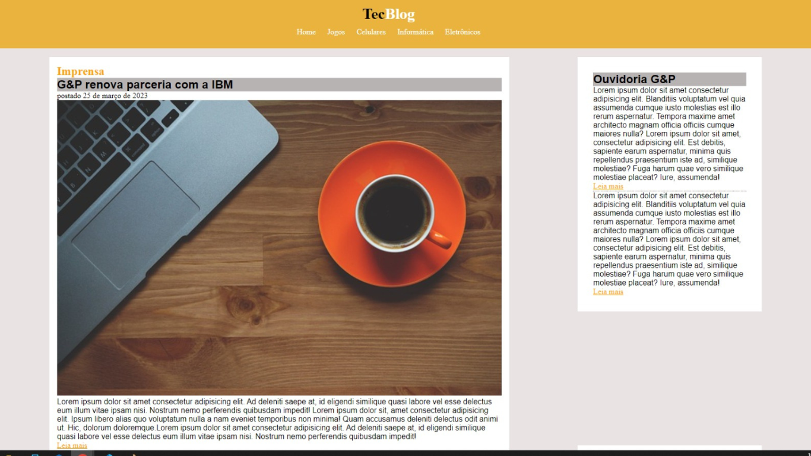
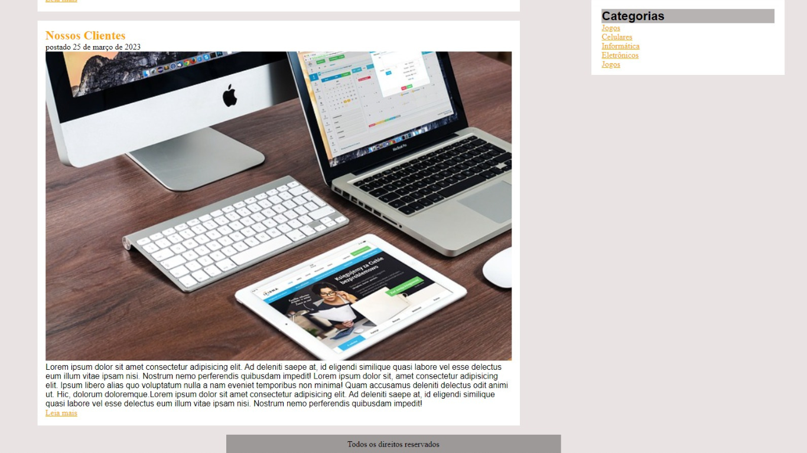
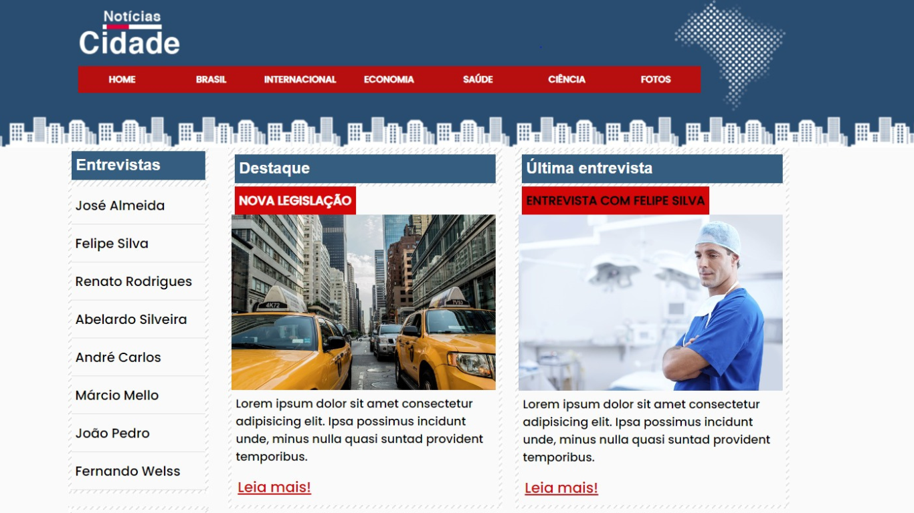
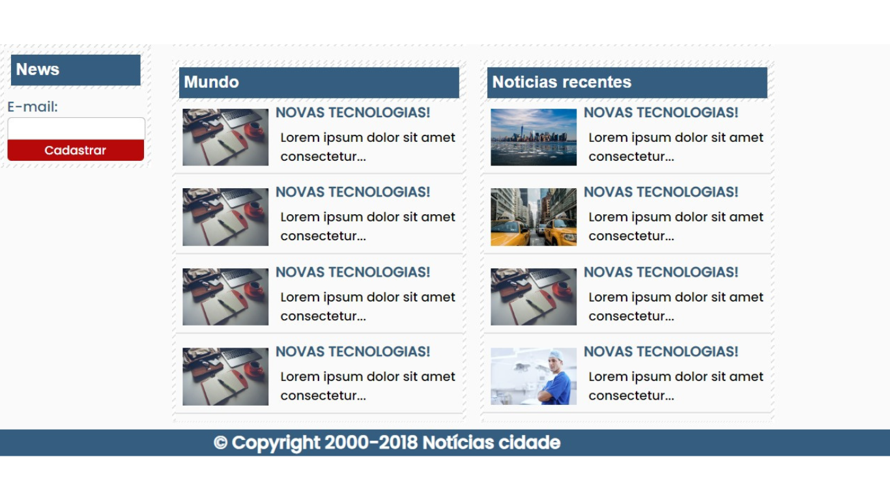
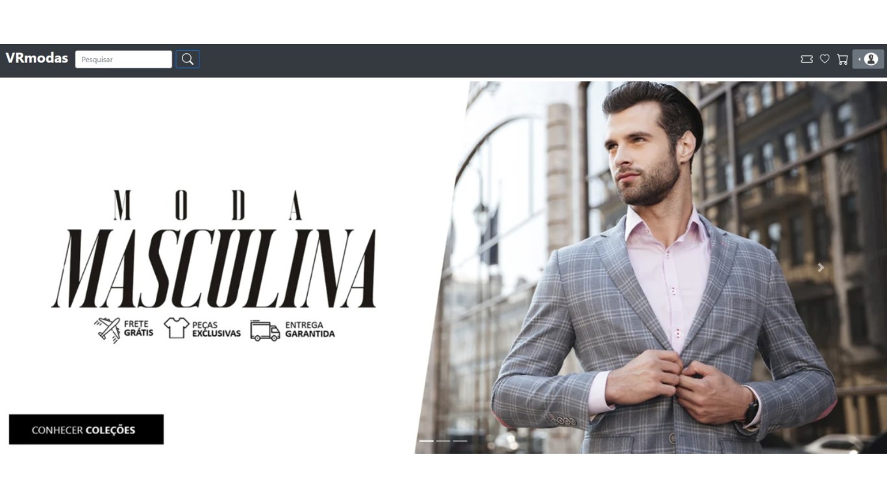
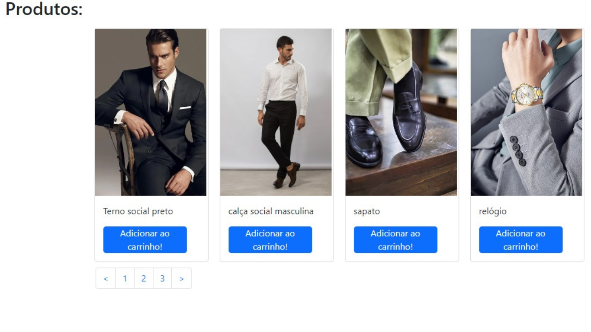
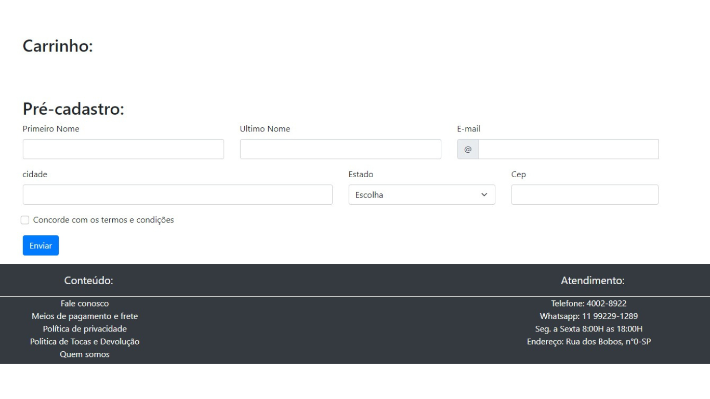

Meu Portfólio
Blog Pessoal
Blog desenvolvido do zero, criado com o objetivo de ser algo funcional, de fácil entendimento e acesso.
 Site de Notícias
Site de notícias do zero, o foco foi ser algo principalmente funcional para o usuário, em um mundo que disputamos a atenção das pessoas, o quanto mais fácil e visual for o projeto melhor.
 E-commerce
O projeto de e-commerce segue a filosofia de fácil usabilidade. Plataforma intuitiva para compras online, com categorias claras e um carrinho de compras simples de usar. O objetivo é tornar a experiência de compra o mais fácil e visual possível.
  